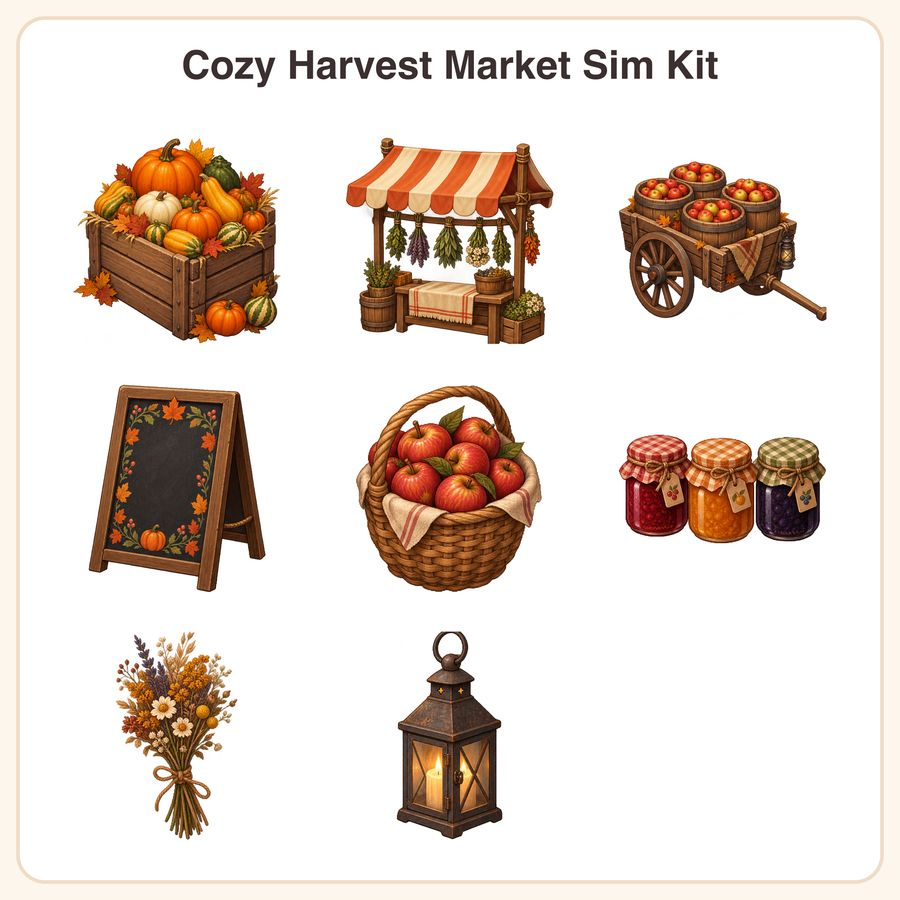

$5.50
View on Etsy🍂 Drop-in autumn market props for your cozy farming or town-sim game — no drawing required! The Cozy Harvest Market Sim Kit gives you a warm, painterly set of HD sprites to fill your game's market scenes with pumpkin crates, apple carts, and glowing lanterns, all rendered in a soft autumn palette of rust, moss, and cream with subtle hand-painted shading and clean transparent edges. What's included (8 unique props): • Overflowing wooden crate of pumpkins and gourds • Striped canvas market stall awning with hanging herbs • Rustic wooden cart loaded with apple barrels • Hand-painted chalkboard price sign with autumn leaf border • Woven basket brimming with red apples • Row of jam jars with checkered lids • Small bouquet of dried wildflowers tied with twine • Iron market lantern with warm glowing candle File formats & sizes: • 8 PNG sprites at 1024x1024px (transparent background) • 8 PNG sprites at 512x512px (transparent background) • 1 preview contact sheet (JPG) showing all assets • Delivered as a zipped folder, instant digital download How to use: Drag and drop directly into your game engine of choice (Unity, Godot, GameMaker, RPG Maker, etc). Scale down further as needed for pixel-perfect placement, or use as high-res props for parallax and menu scenes. License: For personal and small-business commercial use in finished game projects, up to 500 units/copies sold or distributed. Credit appreciated but not required. You may not resell, redistribute, or share the raw asset files themselves as a standalone product or asset pack. A note on how these are made: These sprites were designed in-house by our small shop, using AI image-generation tools as part of our creative process, with manual cleanup, palette matching, and edge/transparency work done by hand. We're honest about our workflow because we think you should know exactly what you're buying 🌾